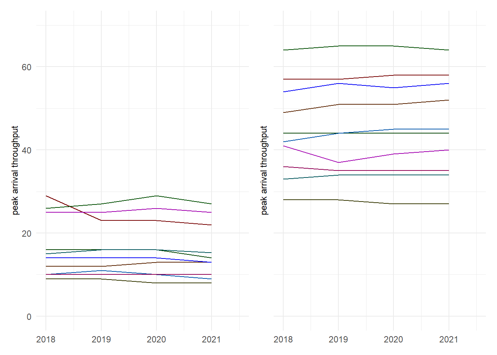

5 Capacity and Throughput
A proper balance between airport capacity and flight demand is paramount to an adjusted network flow. This section addresses the capacity and throughput dimensions as measured by a variety of KPIs at the airport level. Airspace users expect sufficient capacity provision addressing the levels of demand. With higher levels of capacity utilisation, airspace users will experience congestion and constraints (e.g. higher inefficiency, c.f. previous chapter). However, planning and staffing for peak situations may come at significant costs to airspace user as well. In that respect it is essential to understand the trade-off between capacity provision and capacity consumption (i.e. traffic demand) as it impacts the overall system performance. Capacity and throughput analyses are therefore showing to what extent air navigation services are capable to accommodate the demand.
5.1 Peak Declared Capacity
Peak Declared Capacity refers to the highest movement rate (arrivals and landings) at an airport using the most favourable runway configuration under optimal conditions. The capacity value might be subject to local or national decision-making processes. The indicator represents the highest number of landings an airport can accept in a one-hour period.
In Brazil, the peak capacity is determined by DECEA considering local operational constraints. Within the European region, the airport capacity is determined locally or nationally as part of the capacity declaration process. This considers local operational constraints (e.g. political caps, noise quota and abatement procedures), infrastructure related limitations (e.g. apron/stand availability, passenger facilities). The declaration process considers typically IMC separation minima for runway movements. 1
All European airports in this study are Category 3 - fully slot controlled. The slot and capacity declaration process is undertaken on the local or national level. Throughout the last years additional political caps in terms of maximum number of annual movements (e.g. Amsterdam (EHAM) movement cap of 500.000 commercial operations) or permissible night and day time restrictions (e.g. London Heathrow night operation cap) have been introduced widely. Accordingly, capacity values in Europe vary despite the local runway system capabilities. 2
Throughout the last years, no substantial change in the declared capacity was observed at European airports. In Brazil, on the other hand, 2019 showed a revised capacity declaration for most of the airports throughout the country, c.f. Figure Figure 5.1).
Since the end 2018, CGNA worked on the enhancement of the methodology for the determination of the runway system capacity. The previous methodology used conservative limitations for the declaration of airport capacity. Capacity was limited to the maximum of 80% of its real value due to additional parameters taken into account (e.g. local specifics). The best practice approach included a 50%-50% division between arrivals and departures. The process and refined analysis methodology has evolved in such ways that these mentioned concepts are no longer in use. The capacity is declared on the basis of its actual value considering all variables that can restrain and impact the achievable capacity. It is applied in accordance with the operational conditions at the airport or the prevailing meteorological condition.
These changes significantly increased runway systems capacity for most of Brazilian airports. Airports such as SBGR, SBGL, SBCF, SBBR and SBSV benefited from the changes made, including changes in their runway system configurations. CGNA continues developing enhancements to the runway capacity analysis process. This resulted in the publication of a refined process by the end of 2020. The impact of the revision will likely influence the Brazilian airport capacity declaration.
Figure 5.2 the peak declared capacity per hour for each of the study airports in Europe and Brazil in 2021. In general, the declared capacity for all airports in Europe exceeds the respective declared capacity levels in Brazil.
The peak capacity for Brasília (SBBR) approached to Munich (EDDM) and Heathrow (EGLL) due to the implantation of independent operarions and the methodology calculation review. Those tree airports, with similar layout, show bigger capacity than Barcelona e Zurich which have tree runway. Galeão (SBGL) and Guarulhos (SBGR) are now above the peak capacity declared for the single-runway airport Gatwick (EGKK). But still, the declared capacity values at those airports ranged around 50% of the major hubs in Europe, i.e. Paris Charles de Gaulle (LFPG), Amsterdam (EHAM), and Frankfurt (EDDF).
As mentioned before, the capacity process takes into account a variety of local considerations. A potential avenue for further research could be a closer investigation of the variances of the declared capacity in line with the local runway system characteristics.
5.2 Peak Arrival Throughput
The peak arrival throughput measures the 95th percentile of the hourly number of landings observed at an airport. The measure gives an indication of the “busy-hour” landing rates. It is an indication to what extent arrival traffic is serviced at an airport. For congested airports, the throughput provides a measure of the effectively realized capacity. Throughput is a measure of demand and comprises already air traffic flow or sequencing measures applied by ATM or ATC in the en-route and terminal phase. For non-congested airports, throughput serves as a measure of showing the level of (peak) demand at this airport. Unlike the day Peak Day indicator, the busiest hour of the airports under study did not suffer a significant reduction in their values even with the crisis. The demand peak during the last two years and the natural tendency of traffic concentration in more attractive hours were enough to keep the values at level with the historical data.

Figure 5.3 shows a constant behaviour of the peak arrival throughput across the whole time horizon. A noteworthy exemption is Brasilia (SBBR). At SBBR, a reduction of the peak arrival throughput was observed in 2019 in comparison to the previous year. Brasilia Airport started independent operations on its two runways back in 2016. As a result - and after a period of standardisation of procedures for aircrew and controllers - its traffic was possibly better dispersed throughout the day.
For the majority of the European airports, Figure 5.3 depicts little variation over the years. These study airports represent the busiest 10 airports and accordingly the peak arrival throughput per hour presents an upper limit based on the airspace user demand and traffic patterns. The increase observed in peak arrival throughput at Paris (LFPG), Madrid (LEMD), Rome (LIRF), and Munich (EDDM) was in line with additional demand during peak hours. The continual increase in peak arrival throughput signals a potential concentration of feeder flights for international / long-range traffic.
The relative constant pattern of the peak arrival throughput observed for many airports suggests that traffic patterns during the busiest hours remained fairly constant. Potential changes to the airspace user demand widely occurred outside the peak hours. This suggests that arrival management of air traffic services in Brazil and Europe is able to sustain the observed demand.
5.3 Peak Departure Throughput
In analogy to the arrival throughput, the departure throughput is determined as the 95th percentile of the hourly number of departures. The measure serves as an indication of the “busy-hour” departure rates. As seen in the previous indicator, the pandemic crisis did not influence the values significantly.

The peak departure throughput at the study airports shows a similar behaviour than the behaviour observed for the arrival throughput (c.f. above). This suggests widely homogeneous demand patterns, i.e. schedules, across the different seasons.
Peak departure throughput at SBBR showed a similar decrease as for the arrival peak throughput as reported above.
In Europe, Rome (LIRF) saw a drop in departure throughput in 2017 as well, which then remained fairly constant until 2019. The observed decrease is linked to a de-peaking of the outbounds. Frankfurt (EDDF) and Madrid (LEMD) experienced a step as of 2019 that is in line with additional routes served. The annual traffic increase observed at Paris (LFPG) resulted in an increase in the peak departure throughput accommodating these additional flights also during peak hours. The observed systematic constant performance levels at Heathrow (EGLL), Gatwick (EGKK), Barcelona (LEBL), and Zurich (LSZH) evidences that these airports and air traffic services operated at their capacity limits during peak hours throughout the time horizon of this report.
5.4 Declared Capacity and Peak Throughput
Effective utilisation of the deployed capacity during peak times drives operational efficiency. In this initial comparison report, the difference between the peak arrival rate and the declared capacity is analysed in order to demonstrate which airports have more and less “slack” between the peak movement levels and their capacity. Figure 5.5 orders all study airports based on their declared arrival capacities and compares these values with the observed peak arrival throughput.
For the majority of the airports, the approximated arrival capacity is higher than the observed peak throughput. In Europe, Amsterdam (EHAM), Frankfurt (EDDF), and Munich (EDDM) showed a higher peak throughput than the respective declared capacity. Peak arrival operations at Zurich (LSZH) were slightly higher than the declared capacity. In Brazil, the realised peak arrival throughput at Sao Paulo (SBSP) exceeded the capacity value as well. At these airports, it appears that during the peak hours (i.e. the top 5% of all hourly arrivals) in 2021 better than declared arrival throughputs were realised. This might be linked to the methodology used for the capacity declaration process following a more modulated approach and accounting for a wider varied aircraft mix. It will be interesting to research in future comparisons how the peak hour demand is managed in comparison to less busier hours and its underlying driving factors.
5.5 Summary
The maximum capacities of Brazilian airports tend to be lower than the declared capacities at European airports. Throughout the past years, Brazil changed its methodology to identify and declare arrival and departure capacities. In light of this change and on the basis of operational improvements, Brazilian airports have been showing consistent growth in their capacities. This growth of traffic is widely completed for the top 10 airports in Europe and the associated capacities were constant over the past years.
Another highlight is the resilience of peak hours against demand variations. Despite the unprecendented decline of air traffic due to COVID19, demand remained concentrated during peak operating hours. On average, the declared arrival capacity is commensurate with the peak traffic observed at the airports. This suggests that runway system capacities is not a limitation for servicing traffic demand in both regions.
The Brazilian airports that have more than one operational runway are: Brasília (SBBR) with 2 independent runways; Guarulhos (SBGR) with 2 parallel runways (simultaneous but not independent operations); and Galeão (SBGL), Curitiba (SBCT) and Salvador (SBSV) with 2 intersecting runways.↩︎
Amsterdam (EHAM) operates at fixed capacity with 6 runways, London Heathrow has maximised the runway throughput with 2 independent runways, Gatwick airport is reportedly the most efficient single runway operation in Europe.↩︎